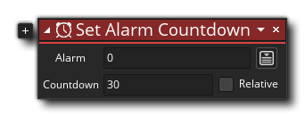

La description
Ce bloc d'action définit une alarme donnée pour le compte à rebours, et lorsque l'alarme atteint zéro, l' événement d'alarme associé sera déclenché. Vous fournissez le numéro d'alarme de 0 à 11, puis la valeur à laquelle régler l'alarme. La valeur utilisée est le nombre de "pas de jeu" que vous voulez passer avant que l'événement d'alarme ne soit déclenché, et vous pouvez le définir par rapport à la valeur d'alarme actuelle (en ajoutant ou en soustrayant à la valeur courante). Notez que la valeur doit être une valeur entière et vous pouvez la définir sur -1 pour arrêter l'alarme. Notez que lorsqu'une alarme compte à rebours, l'événement est exécuté lorsqu'il atteint 0, mais l'alarme décompte à -1 pour indiquer qu'elle est terminée. La définition d'une alarme sur 0 n'exécutera pas l'événement, car il sera décompté à -1 l'étape suivante. Ainsi, pour lancer une alarme immédiatement, elle doit être définie sur 1. Notez que vous pouvez définir des alarmes supplémentaires dans la même action en cliquant sur icône plus
à côté de l'action.
Syntaxe de l'action:
Arguments:
Argument La description Alarm L'alarme à régler (l'événement d'alarme correspondant sera déclenché lorsqu'il atteindra 0). Countdown Le compte à rebours dans les étapes du jeu.
Exemple:

Le code de bloc d'action ci-dessus crée une variable locale (temporaire) et stocke la valeur actuelle de l'alarme [0]. Ceci est ensuite vérifié et s'il est inférieur à 0, l'alarme est réglée sur 60.